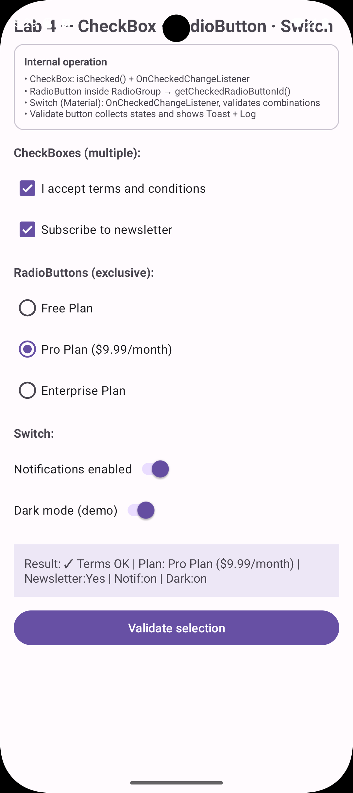

CheckBox, RadioGroup y SwitchMaterial
Aprende el uso adecuado de selecciones múltiples independientes (CheckBox), opciones mutuamente excluyentes en
grupo (RadioGroup + RadioButton) e
interruptores de activación inmediata (SwitchMaterial) con persistencia y validación.
1. Capturas del Emulador
Haz clic sobre cualquier captura para abrirla en zoom interactivo
Selección Completa
lab-selection.gif

Resultado Consolidado
lab-selection-result.png

2. Componentes de Selección
android.widget.* & Material3| Componente / ID | Clase / Tipo | Propósito | Propiedad / Característica Clave |
|---|---|---|---|
| cbTerms | CheckBox | Aceptación obligatoria de términos y condiciones | isChecked() como guardia de validación |
| cbNewsletter | CheckBox | Suscripción opcional a boletín informativo | Selección independiente booleana |
| rgOptions | RadioGroup | Contenedor de exclusión mutua para planes | getCheckedRadioButtonId() == -1 |
| rbFree / rbPro / rbEnterprise | RadioButton | Opciones individuales de nivel de suscripción | Evaluadas mediante when / if-else |
| switchNotif / switchDark | SwitchMaterial | Ajustes de notificaciones y tema oscuro | Estilo visual Material Design con animación deslizante |
| btnValidateSelection | MaterialButton | Disparador de validación y consolidación de estado | Genera reporte en tvSelectionResult |
3. Código Fuente del Layout XML y Controladores
<?xml version="1.0" encoding="utf-8"?>
<ScrollView xmlns:android="http://schemas.android.com/apk/res/android"
xmlns:app="http://schemas.android.com/apk/res-auto"
android:layout_width="match_parent"
android:layout_height="match_parent">
<LinearLayout
android:layout_width="match_parent"
android:layout_height="wrap_content"
android:orientation="vertical"
android:padding="16dp">
<TextView
android:layout_width="wrap_content"
android:layout_height="wrap_content"
android:text="@string/acsele_title"
android:textSize="20sp"
android:textStyle="bold" />
<com.google.android.material.card.MaterialCardView
android:layout_width="match_parent"
android:layout_height="wrap_content"
android:layout_marginTop="8dp"
app:strokeColor="@color/cardStroke"
app:strokeWidth="1dp"
app:cardElevation="0dp">
<LinearLayout
android:layout_width="match_parent"
android:layout_height="wrap_content"
android:orientation="vertical"
android:padding="12dp">
<TextView
android:layout_width="wrap_content"
android:layout_height="wrap_content"
android:text="@string/common_label_operation"
android:textStyle="bold"
android:textSize="12sp" />
<TextView
android:layout_width="wrap_content"
android:layout_height="wrap_content"
android:layout_marginTop="4dp"
android:text="@string/acsele_info_desc"
android:textSize="11sp" />
</LinearLayout>
</com.google.android.material.card.MaterialCardView>
<TextView
android:layout_width="wrap_content"
android:layout_height="wrap_content"
android:layout_marginTop="16dp"
android:text="@string/acsele_label_checkboxes"
android:textStyle="bold" />
<CheckBox
android:id="@+id/cbTerms"
android:layout_width="wrap_content"
android:layout_height="wrap_content"
android:layout_marginTop="8dp"
android:text="@string/acsele_cb_terms" />
<CheckBox
android:id="@+id/cbNewsletter"
android:layout_width="wrap_content"
android:layout_height="wrap_content"
android:text="@string/acsele_cb_newsletter" />
<TextView
android:layout_width="wrap_content"
android:layout_height="wrap_content"
android:layout_marginTop="16dp"
android:text="@string/acsele_label_radios"
android:textStyle="bold" />
<RadioGroup
android:id="@+id/rgOptions"
android:layout_width="match_parent"
android:layout_height="wrap_content"
android:layout_marginTop="8dp">
<RadioButton
android:id="@+id/rbFree"
android:layout_width="wrap_content"
android:layout_height="wrap_content"
android:text="@string/acsele_rb_free" />
<RadioButton
android:id="@+id/rbPro"
android:layout_width="wrap_content"
android:layout_height="wrap_content"
android:text="@string/acsele_rb_pro" />
<RadioButton
android:id="@+id/rbEnterprise"
android:layout_width="wrap_content"
android:layout_height="wrap_content"
android:text="@string/acsele_rb_ent" />
</RadioGroup>
<TextView
android:layout_width="wrap_content"
android:layout_height="wrap_content"
android:layout_marginTop="16dp"
android:text="@string/acsele_label_switch"
android:textStyle="bold" />
<com.google.android.material.switchmaterial.SwitchMaterial
android:id="@+id/switchNotif"
android:layout_width="wrap_content"
android:layout_height="wrap_content"
android:layout_marginTop="8dp"
android:text="@string/acsele_sw_notif" />
<com.google.android.material.switchmaterial.SwitchMaterial
android:id="@+id/switchDark"
android:layout_width="wrap_content"
android:layout_height="wrap_content"
android:text="@string/acsele_sw_dark" />
<TextView
android:id="@+id/tvSelectionResult"
android:layout_width="match_parent"
android:layout_height="wrap_content"
android:layout_marginTop="16dp"
android:background="#FFEDE7F6"
android:padding="12dp"
android:text="@string/acsele_result_default" />
<com.google.android.material.button.MaterialButton
android:id="@+id/btnValidateSelection"
android:layout_width="match_parent"
android:layout_height="wrap_content"
android:layout_marginTop="12dp"
android:text="@string/acsele_btn_validate" />
</LinearLayout>
</ScrollView>4. Cómo llamar, manipular, sobrescribir y validar cada control
Todos se leen con isChecked() / getCheckedRadioButtonId() y se escriben con setChecked() / check() / clearCheck(). Abajo, por cada tipo, cómo llamar, manipular, sobrescribir y cómo dar error/validar (aunque no tienen setError() como los TextInput).
API común (vale para CheckBox / Switch / Radio)
// Llamar (Java)
CheckBox cbTerms = findViewById(R.id.cbTerms);
RadioGroup rg = findViewById(R.id.rgOptions);
SwitchMaterial sw = findViewById(R.id.switchNotif);
// Kotlin + ViewBinding
val cbTerms = binding.cbTerms
// Manipular - leer
boolean checked = cbTerms.isChecked();
int id = rg.getCheckedRadioButtonId(); // -1 si ninguno
// Sobrescribir
cbTerms.setChecked(true);
cbTerms.toggle();
rg.check(R.id.rbPro);
rg.clearCheck();
sw.setChecked(false);
// Dar error/validar (no hay setError visual, se usa Toast + TextView result + Log)
if (!cbTerms.isChecked()) {
Toast.makeText(this, getString(R.string.acsele_toast_terms), Toast.LENGTH_SHORT).show();
tvResult.setText(getString(R.string.acsele_result_terms_fail));
}Listeners - reaccionar al cambio
cbTerms.setOnCheckedChangeListener((buttonView, isChecked) -> {
Log.d(TAG, "cbTerms=" + isChecked);
});
rg.setOnCheckedChangeListener((group, checkedId) -> {
Log.d(TAG, "Radio id=" + checkedId);
if (checkedId == R.id.rbFree) { /* ... */ }
});
sw.setOnCheckedChangeListener((buttonView, isChecked) -> {
Log.d(TAG, "switch=" + isChecked);
});En Lab 4 los listeners solo loguean; la validación real se hace al pulsar btnValidateSelection.
Por tipo de control
| Control | Llamar | Manipular | Sobrescribir | Validar / Error |
|---|---|---|---|---|
| CheckBox cbTerms, cbNewsletter | findViewById(R.id.cbTerms) | isChecked()setOnCheckedChangeListener | setChecked(true)toggle() | if (!isChecked) Toast + tvResultno tiene setError() |
| RadioGroup rgOptions | findViewById(R.id.rgOptions) | getCheckedRadioButtonId() → -1 si vacíosetOnCheckedChangeListener | check(R.id.rbPro)clearCheck() | if (id==-1) Toast acsele_toast_plan |
| RadioButton rbFree/rbPro/rbEnterprise | findViewById(R.id.rbFree) | isChecked() (raro, usar grupo) | setChecked(true) (delegado al grupo) | Se valida vía grupo, no individual |
| SwitchMaterial switchNotif/dark | findViewById(R.id.switchNotif) | isChecked() | setChecked(true/false)toggle() | Opcional: if (!isChecked) ... pero en Lab 4 solo se reporta |
Snippets copiables — manipular / sobrescribir / validar
// Java — por cada control
// CheckBox
boolean terms = cbTerms.isChecked();
cbTerms.setChecked(true);
cbTerms.toggle();
cbTerms.setOnCheckedChangeListener((b,c) -> Log.d(TAG, "terms="+c));
if (!terms) {
Toast.makeText(this, getString(R.string.acsele_toast_terms), Toast.LENGTH_SHORT).show();
tvResult.setText(getString(R.string.acsele_result_terms_fail));
return;
}
// RadioGroup
int radio = rg.getCheckedRadioButtonId();
if (radio == -1) { /* error */ }
rg.check(R.id.rbFree);
rg.clearCheck();
RadioButton selected = findViewById(radio);
String plan = selected.getText().toString();
// Switch
boolean notif = sw.isChecked();
sw.setChecked(!notif);
sw.setOnCheckedChangeListener((b,c) -> { /* ... */ });// Kotlin + ViewBinding — mismo, más corto
with(binding) {
// CheckBox
val terms = cbTerms.isChecked
cbTerms.isChecked = true
cbTerms.toggle()
cbTerms.setOnCheckedChangeListener { _, c -> Log.d(TAG, "terms=$c") }
if (!terms) {
Toast.makeText(this@SelectionActivity, getString(R.string.acsele_toast_terms), Toast.LENGTH_SHORT).show()
tvSelectionResult.text = getString(R.string.acsele_result_terms_fail)
return
}
// RadioGroup
val radio = rgOptions.checkedRadioButtonId
rgOptions.check(R.id.rbPro)
rgOptions.clearCheck()
// Switch
val notif = switchNotif.isChecked
switchNotif.isChecked = !notif
}Sobrescribir vs alternar
setChecked(true/false) fuerza estado. toggle() invierte. check(id) marca un Radio y desmarca los demás.
Dar error sin setError
CheckBox/Radio/Switch no tienen setError(). Se valida con Toast + tvResult.setText(acsele_result_*) + Log.e/w como en Lab 4.
Diferencia clave
CheckBox y Switch son independientes (boolean). RadioGroup es exclusivo (un id o -1). Por eso se valida checkedId == -1.